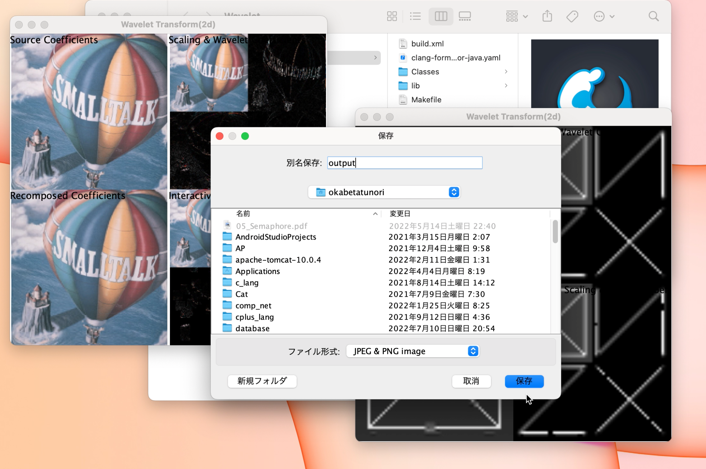

このアプリケーションは，画像処理アプリケーションである．ウェーブレット変換を利用して， 画像を圧縮することができる．また，圧縮の度合いを変更することができ，ウェーブレット展開係数を選択 すると，選択した分だけ画像が復元される．復元した画像は保存することができる．
URL
非公開
担当
基本設計・詳細設計・コーディング・アイコンデザイン
アプリケーションを開発した目的
ウェーブレット変換を一から作り始めて、オブジェクト指向プログラムとしてライブラリ化し、 それを応用するまでの一連の作業（工程）を演習することにより、ウェーブレット画像処理とは何かを会得すると共に、 かかる開発要員が品質の高いソフトウェアを念頭に置き、デザインとプログラミングのスキルを向上させ、 ソフトウェア工学的なセンスを磨くことにある。
デザインについて
ウェーブレット変換を用いたアプリケーションであるため，波をイメージしたアイコンである． また，コーポレートカラーの決め方を採用しており，アイコンの色や背景にも気を遣っている．
コーディングについて
Model・View・Controllerのうち，主にModelの計算部分を担当した． メッセージングを意識している．